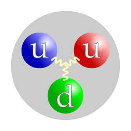

| Atomo | definizione: L'atomo (dal greco ἄτομος átomos: indivisibile) è la struttura nella quale la materia è organizzata in unità fondamentali che costituiscono gli elementi chimici. Gli atomi si aggregano frequentemente in unità stabili dette molecole che caratterizzano molte sostanze. Concepito come l'unità più piccola e indivisibile della materia secondo la dottrina atomistica dei filosofi greci Leucippo, Democrito ed Epicuro, e teorizzato su base scientifica all'inizio del XIX secolo, verso la fine dell'Ottocento, con la scoperta dell'elettrone, fu dimostrato che l'atomo è composto da particelle subatomiche (oltre all'elettrone, il protone e il neutrone). Se nel mondo fisico abituale la materia, nei suoi stati solido, liquido e gassoso, è costituita dalle unità elementari degli atomi, a valori di pressione e temperatura sufficientemente elevati la loro esistenza non è possibile, |
Esempio: idrogeno |
immagine
|
| Protone | Definizione: Particella elementare stabile, che insieme al neutrone costituisce il nucleo atomico; ha massa uguale a quella del nucleo dell'atomo di idrogeno, pari a 1,6748·10-27 kg, carica positiva uguale e di segno contrario a quella dell'elettrone e spin semiintero. |
esempio: protone |
immagine  |
| Elettrone | Definizione | Esempio | Immagine |